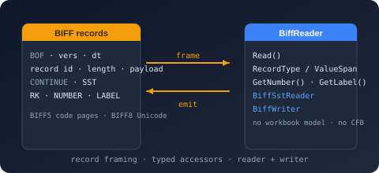

Bodu.IO.Biff Namespace
- Package
-
Bodu.IO.Biff 1.3.0

Purpose
Bodu.IO.Biff is a low-level codec for the Excel Binary Interchange File Format - the BIFF5 (Excel 5.0/95) and BIFF8 (Excel 97-2003) record streams stored inside legacy .xls workbooks. It is the substrate beneath Bodu.Formats.Excel.Binary, in the same relation Bodu.IO.Pst has to the Outlook mail-store reader: it understands how BIFF is encoded, not what a workbook means. There is no compound-file dependency, no workbook or cell model, and no formula evaluation.
BiffReader walks a record stream forward over a span, one physical record at a time, establishing the version from the first BOF record and the code page from CODEPAGE, exposing every record's identifier and raw payload, and decoding the common structural and cell records through typed accessors. BiffSstReader walks the BIFF8 shared string table across its CONTINUE records. BiffWriter emits records under an explicit version, from typed values or raw payloads, splitting oversized structures into CONTINUE records by the format's rules.
Static documentation
- Introduction - the headline types, the layering between the container and the Excel reader, and the scenarios the codec covers.
- Core concepts - records, versions, substreams, continuation, strings and code pages, the shared string table, RK numbers, resumption.
- Record reference - every named record with its identifier, BIFF5 and BIFF8 layouts, decoded type, reader accessor, and writer method.
- Getting started - install and minimal samples for reading, decoding, resuming, and writing.
- Binary Formats & I/O topic overview - where the codec sits beneath the format readers.
Key types
Reader
- BiffReader - the forward-only
ref structreader.Readadvances to the next physical record;RecordId/RecordType/RecordLength/ValueSpan/Headerdescribe it (unknown identifiers are never an error);VersionandCodePageare the state the stream established;TryReadContinuationconsumes a followingCONTINUE;CurrentState/BytesConsumedwith the(data, isFinalBlock, state)constructor resume across buffers. Typed accessors:GetBof,GetBoundSheet,GetDimensions,GetRow,GetNumber,GetRk,GetMulRk,GetLabel,GetLabelSst,GetRString,GetBoolErr,GetBlank,GetMulBlank,GetFormula,GetString,GetXf,GetFormat,GetFont,GetCodePage,GetDateMode,GetFilePass,GetSstHeader. - BiffReaderOptions / BiffReaderState - seed a known version and code page; carry the established state between readers.
- BiffSstReader - the shared-string-table walker:
Header,Read(ref reader),Index,Length,IsFragmented,Current(span-backed view when contiguous),GetString/CopyTofor every string.
Records
- The decoded record types - BiffBofRecord, BiffBoundSheetRecord, BiffDimensionsRecord, BiffRowRecord, BiffNumberRecord, BiffRkRecord, BiffMulRkRecord (with BiffRkCell), BiffLabelRecord, BiffLabelSstRecord, BiffRStringRecord, BiffBoolErrRecord, BiffBlankRecord, BiffMulBlankRecord, BiffFormulaRecord (with BiffCachedResultKind), BiffStringRecord, BiffXfRecord, BiffFormatRecord, BiffFontRecord, BiffCodePageRecord, BiffDateModeRecord, BiffFilePassRecord (with BiffEncryptionType), BiffSstHeader. Records carrying text or spans are
ref structs over the payload; the rest arerecord structs. - BiffString - the span-backed text view:
Length,IsUnicode/IsHighByte,RawCharacters,RichRuns/ExtendedData,CodePage,EncodedLength,GetCharCount/GetString/CopyTo. - BiffRk -
DecodeandTryEncodefor the RK number representation.
Writer
- BiffWriter - the
ref structwriter overIBufferWriter<byte>:WriteRecord(raw, per-version maximum enforced),WriteContinuedRecord,WriteBof/WriteEof,WriteCodePage/WriteDateMode,WriteBoundSheet/WriteDimensions/WriteRow, the cell writers (WriteNumber,WriteRk,WriteMulRk,WriteBlank,WriteMulBlank,WriteBoolean/WriteError/WriteBoolErr,WriteLabel,WriteLabelSst,WriteFormula,WriteString),WriteXf/WriteFormat/WriteFont, andWriteSstwithCONTINUEsplitting;BytesCommittedandOpenSubstreamDepth. - BiffWriterOptions - the version and the BIFF5 code page.
Vocabulary and limits
- BiffRecordType / BiffVersion / BiffSubstreamType / BiffSheetState / BiffSheetType - the named identifiers, the two versions, the substream kinds, and the bound-sheet enumerations.
- BiffRecordHeader - the four-byte header with
TryParse/WriteTo; BiffLimits - header size, per-version maximum payload, default code page.
Errors
- BiffFormatException (invalid data, with the record
Offset), BiffUnsupportedVersionException (a well-formed stream in a version the codec does not process, with theRawVersionmarker).
Example
using Bodu.IO.Biff;
var reader = new BiffReader(workbookStreamBytes);
string[] sharedStrings = [];
while (reader.Read())
{
switch (reader.RecordType)
{
case BiffRecordType.Sst:
var strings = new BiffSstReader(ref reader);
var list = new List<string>();
while (strings.Read(ref reader))
list.Add(strings.GetString());
sharedStrings = [.. list];
break;
case BiffRecordType.LabelSst:
BiffLabelSstRecord label = reader.GetLabelSst();
Console.WriteLine($"R{label.Row}C{label.Column}: {sharedStrings[label.SstIndex]}");
break;
case BiffRecordType.Number:
BiffNumberRecord number = reader.GetNumber();
Console.WriteLine($"R{number.Row}C{number.Column}: {number.Value}");
break;
}
}
Classes
- BiffFormatException
The exception thrown when BIFF data is structurally invalid: a record header is truncated, a declared payload runs past the available data, or a known record's payload does not match its documented layout.
- BiffLimits
Defines the structural limits of the BIFF record format.
- BiffRk
Encodes and decodes the RK number representation: a 32-bit value whose two low bits select between a signed 30-bit integer and the high 30 bits of an IEEE 754 double, optionally divided by 100.
- BiffUnsupportedVersionException
The exception thrown when a stream is well-formed BIFF but encoded in a version the codec does not process: a BIFF2, BIFF3, or BIFF4 beginning-of-file record, or a
BOFwhose version field is neither BIFF5 nor BIFF8.
Structs
- BiffBlankRecord
Represents a decoded
BLANKrecord: a formatted cell carrying no value.
- BiffBofRecord
Represents a decoded
BOFrecord: the version marker, the kind of substream being opened, and the build information of the application that wrote it.
- BiffBoolErrRecord
Represents a decoded
BOOLERRrecord: a cell holding either a boolean or an error code.
- BiffBoundSheetRecord
Represents a decoded
BOUNDSHEETrecord: one entry of the sheet directory in the workbook globals, giving a sheet's name, visibility, kind, and the absolute stream offset of its substream.
- BiffCodePageRecord
Represents a decoded
CODEPAGErecord: the code page byte strings in the stream are encoded in.
- BiffDateModeRecord
Represents a decoded
DATEMODErecord: whether serial dates in the workbook count from 1 January 1904 rather than from the 1900 date system.
- BiffDimensionsRecord
Represents a decoded
DIMENSIONSrecord: the used row and column extent of a sheet.
- BiffFilePassRecord
Represents a decoded
FILEPASSrecord: the protection scheme applied to the records that follow it. The codec reports the scheme and the XOR parameters; it does not decrypt.
- BiffFontRecord
Represents a decoded
FONTrecord: size, style attributes, color, character set, and face name. The name is an 8-bit-length string in both versions - a Unicode string in BIFF8, a code-page byte string in BIFF5.
- BiffFormatRecord
Represents a decoded
FORMATrecord: a number-format index and its format code. The code is a 16-bit-length Unicode string in BIFF8 and an 8-bit-length code-page byte string in BIFF5.
- BiffFormulaRecord
Represents a decoded
FORMULArecord: the cell's position and format, the cached result of its last calculation, its option flags, and the parsed-expression tokens, which the codec exposes as raw bytes.
- BiffLabelRecord
Represents a decoded
LABELrecord: a cell holding an inline text value. The text is a 16-bit-length Unicode string in BIFF8 and a 16-bit-length code-page byte string in BIFF5.
- BiffLabelSstRecord
Represents a decoded
LABELSSTrecord: a cell whose text is an entry of the shared string table (BIFF8).
- BiffMulBlankRecord
Represents a decoded
MULBLANKrecord: a run of adjacent blank (formatted, valueless) cells in one row, exposed by index without materializing an array.
- BiffMulRkRecord
Represents a decoded
MULRKrecord: a run of adjacent RK-encoded number cells in one row, exposed by index without materializing an array.
- BiffNumberRecord
Represents a decoded
NUMBERrecord: a cell holding an IEEE 754 double-precision value.
- BiffRStringRecord
Represents a decoded
RSTRINGrecord: a BIFF5 rich-text label cell - a 16-bit-length code-page byte string followed by a run table of two-byte entries (character index, font index).
- BiffReader
Provides a forward-only, allocation-free reader over a BIFF5 or BIFF8 record stream. The reader is a
ref structover the supplied bytes: each call to Read() advances to the next physical record and exposes its identifier, length, and payload slice, and typed accessors decode the records the codec names.
- BiffReaderOptions
Defines the customizations a BiffReader is created with.
- BiffReaderState
Carries the state a BiffReader needs to continue a stream across buffers: the established BIFF version and the active code page.
- BiffRecordHeader
Represents the four-byte header that precedes every BIFF record: a 16-bit little-endian record identifier followed by the 16-bit little-endian length of the payload that follows.
- BiffRkCell
Represents one cell of a
MULRKrun: its extended-format index and RK-encoded value.
- BiffRkRecord
Represents a decoded
RKrecord: a cell holding a number in the compact RK encoding.
- BiffRowRecord
Represents a decoded
ROWrecord: a row's used column extent, height, option flags, and default format.
- BiffSstHeader
Represents the counts at the head of an
SSTrecord: the total number of string references in the workbook and the number of unique strings the table holds.
- BiffSstReader
Reads the strings of a BIFF8 shared string table (
SST) one at a time, pulling theCONTINUErecords that carry the table's overflow from the parent BiffReader as they are needed.
- BiffString
Provides a span-backed view over a text value embedded in a BIFF record - a BIFF8 Unicode string (16-bit or compressed 8-bit characters with option flags, rich-text runs, and extended data) or a BIFF5 code-page byte string - without materializing a string until the caller asks for one.
- BiffStringRecord
Represents a decoded
STRINGrecord: the cached text result of theFORMULArecord that precedes it. The text is a 16-bit-length Unicode string in BIFF8 and a 16-bit-length code-page byte string in BIFF5.
- BiffWriter
Provides a forward-only writer that emits BIFF5 or BIFF8 records to an IBufferWriter<T>. Raw records are written from an identifier and payload; the records the codec names are written from typed values in the layout the selected version requires.
- BiffWriterOptions
Defines the customizations a BiffWriter is created with.
- BiffXfRecord
Represents the leading fields of a decoded
XF(extended format) record: the font and number-format indices and the protection and style flags. Alignment, border, and fill fields that follow are not interpreted.
Enums
- BiffCachedResultKind
Identifies the kind of cached result a
FORMULArecord carries in its eight-byte result field.
- BiffEncryptionType
Identifies the protection scheme a
FILEPASSrecord declares.
- BiffRecordType
Identifies the BIFF record types the codec names. Values are the 16-bit record identifiers defined by the Excel binary file format and are shared by BIFF5 and BIFF8 except where a member's documentation says otherwise.
- BiffSheetState
Identifies the visibility a
BOUNDSHEETrecord declares for its sheet.
- BiffSheetType
Identifies the kind of sheet a
BOUNDSHEETrecord describes.
- BiffSubstreamType
Identifies the kind of substream a beginning-of-file record opens.
- BiffVersion
Identifies the version of the Binary Interchange File Format (BIFF) a record stream is encoded in.